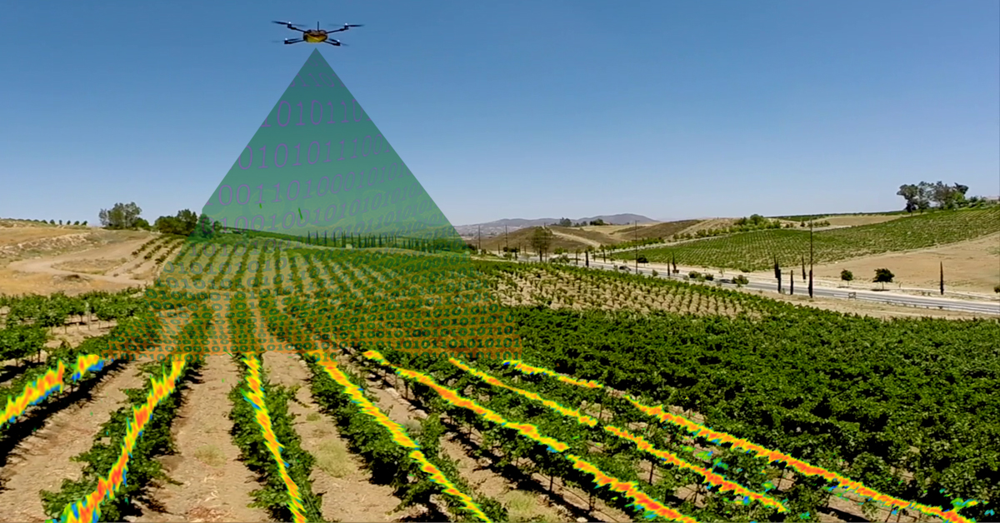

W każdej chwili sprawdź stan swoich upraw
Monitorowanie pól jest to zaawansowany program który pozwoli Ci na otrzymanie dokładnego statusu na temat Twoich plonów.
Okresowo lub na żądanie system uruchamia drona który jest wyposażony w komplet czujników, kamerę, systemy GPS, GSM. Dron przelatuje nad uprawami i skanuje obraz z kamery. Minikomputer znajdujący się na dronie analizuje obraz z kamery za pomocą naszego autorskiego algorytmu. Algorytm potrafi wykryć wiele anomalii w uprawach, np: zbyt niskia wysokość roślin, szkody wyrządzone przez dzikie zwierzęta i losowe wydarzenia atmosferyczne (np gradobicia, pożary, susza).
Nasz dron może działać w częściowo niekorzystnych warunkach (deszcz i wiatr). W wypadku skrajnie niekorzysnej pogody, wypuszczenie drona jest ryzykowne. Minimalna temperatura pracy drona to -10 , a maksymalna +40 stopni celsjusza.
Jeżeli na terenie Twoich upraw istnieje zasięg GSM, lub jedna z naszych anten od razu będziesz powiadomiony o ważnych zdarzeniach wyrytych przez drona. W innym wypadku dron po powrocie do bazy połączy się z Twoim internetem i wyśle swoje dane. Dodatkowo wszystkie dane są przesyłane na nasz serwer który analizuje dane otrzymane od drona oraz porównuje je z danymi statystycznymi z innych upraw i poprzednich lat. W każdej chwili będziesz mógł sprawdzić w aplikacji jaki jest stan Twoich upraw i co najważniejsze od razu zareagować jeżeli pojawi się problem.
Koszt
Niektóre urządzenia możesz wypożyczyć na okres zamiast od razu kupować na własność. W wypadku posiadania innych systemów prosimy o kontakt w celu ustalenia indywidualnego cennika usług.| cena jednostkowa | abonament (wypożyczenie) - miesiąc | |
| Dron | 10000zł | 300zł |
| System SmartRolnik - aplikacja | - | 1000zł |
| Utrzymanie bazy danych (koszt na 1 ha) | - | 10zł |